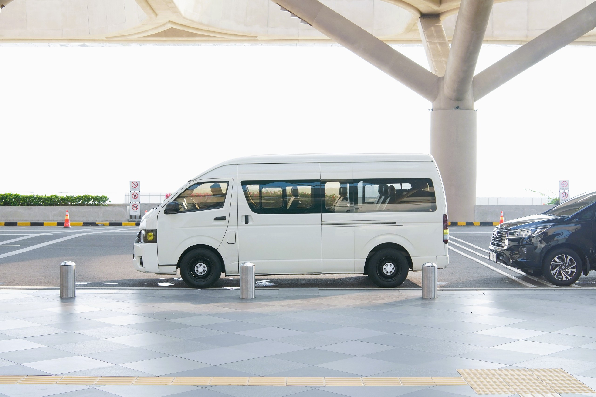
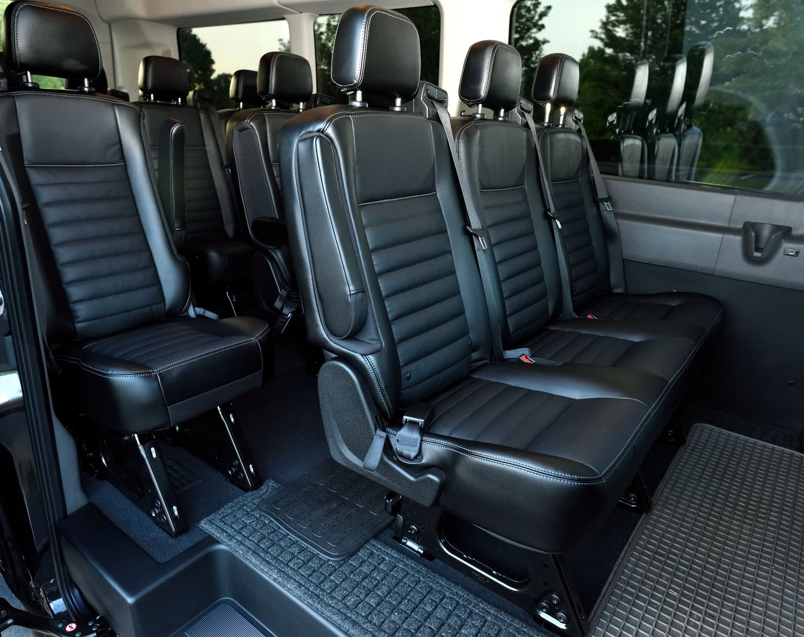
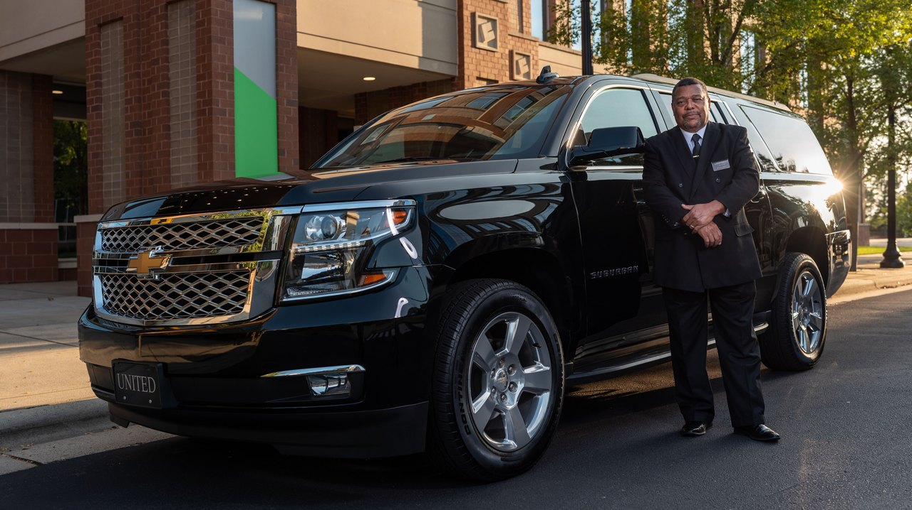
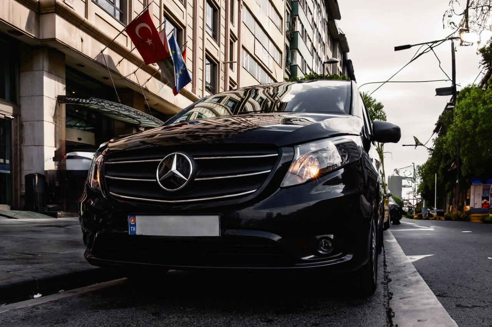
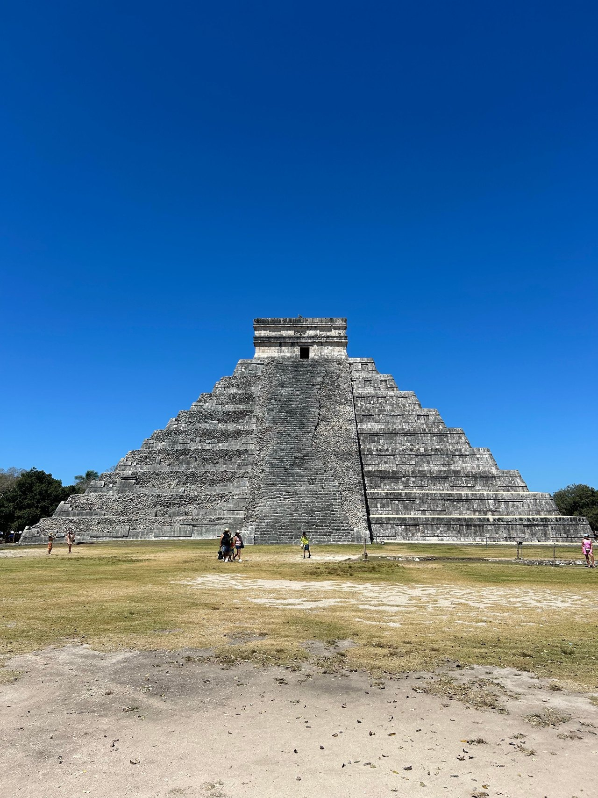

Transporte turístico y privado
Del aeropuerto al mar, por la selva.
Traslados privados y tours en Tulum, Cancún y toda la Riviera Maya. Te esperamos con tu nombre y te llevamos directo.
Tulum, Q. Roo
20.21° N · 87.46° O
Somos de aquí
Una empresa local de Tulum. Conocemos cada carretera, cada cenote y cada horario de llegada al aeropuerto.
- ChoferesLocales y bilingües
- UnidadesPrivadas y con aire acondicionado
- Tu vueloLo seguimos si se retrasa
- CotizaciónEn minutos, por WhatsApp
Tu transporte
Una unidad solo para ti. Sin paradas en otros hoteles.



Servicios
Elige uno y el cotizador se llena solo.
- 01Cotizar →
Traslados aeropuerto
Cancún (CUN) y Tulum (TQO) a tu hotel, ida o viaje redondo.
- 02Cotizar →
Transporte privado
Entre hoteles, restaurantes y ciudades de la Riviera Maya, a la hora que lo necesites.

- 03Cotizar →
Tours y excursiones
Chichén Itzá, Cobá, Tulum, Bacalar y cenotes con transporte de ida y vuelta.

- 04Cotizar →
Grupos y eventos
Bodas, retiros y viajes de empresa. Coordinamos varias unidades para tu grupo.
Llegas cansado de un vuelo. Nosotros nos encargamos del resto.
Te esperamos a la salida
Tu chofer te recibe en llegadas con un letrero con tu nombre y te ayuda con las maletas.
Directo a tu destino
Unidad privada para ti y tu grupo. Sin compartir el viaje y sin paradas que no pediste.
Tu regreso, coordinado
Agendamos la vuelta al aeropuerto con tiempo para que no corras el último día.
Destinos
Playa, selva, cenotes y ciudades mayas. Te llevamos a todos.
Toca un destino y lo agregamos a tu cotización. Tiempos aproximados desde Tulum.
Tú disfruta el agua. El camino lo conocemos.
Cotiza tu viaje
- 01
Nos escribes
Con esta frase o directo por WhatsApp.
- 02
Te confirmamos
Precio, unidad y hora de recogida, por escrito.
- 03
Te recogemos
Te avisamos cuando tu chofer va en camino.
Opiniones
Lo que dicen quienes ya viajaron con nosotros.
Aquí aparecerán las reseñas reales de tus clientes. Agrégalas en la constante TESTIMONIOS de este archivo (nombre, origen, texto y estrellas).
Contacto
¿A dónde vamos?
- WhatsApp y teléfono
- +52 984 232 4975
- Correo
- hola@tulumsonrisetours.com
- Horario
- Todos los días, 7:00 a 22:00
- Zona
- Tulum, Playa del Carmen, Cancún y toda la Riviera Maya